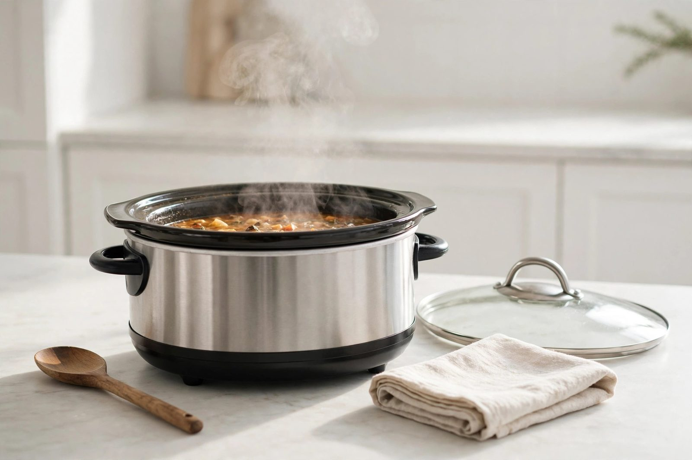
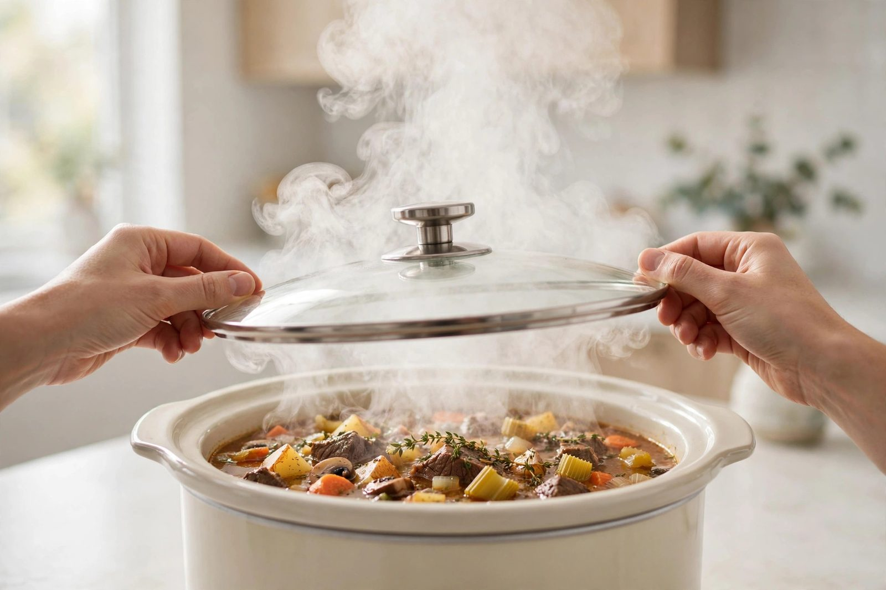

Slow cooker mistakes to avoid

The slow cooker has a reputation for being foolproof, and it mostly is — but "mostly" leaves room for a lot of watery pot roasts and flavorless stews. Nearly every disappointing slow cooker meal traces back to a small handful of mistakes. Fix these and the same appliance that frustrated you starts turning out dinners worth repeating.
Mistake 1: Too much liquid
This is the number one slow cooker error, and it surprises people because most of us learned to cook from recipes built for the stovetop. On the stove, liquid evaporates constantly, so you add plenty. In a slow cooker, the sealed lid traps almost all moisture — meat and vegetables also release their own juices as they cook. The result of stovetop-level liquid is soup when you wanted stew.
The fix: use noticeably less liquid than you think, usually enough to barely cover a third to half of the ingredients. Canned tomatoes, salsa, and vegetables like onions and mushrooms contribute a lot of liquid on their own. If a finished dish still looks thin, take the lid off for the last 30–45 minutes of cooking and let it reduce, or thicken at the end with a spoonful of cornstarch mixed with cold water.
Mistake 2: Lifting the lid to check

Every peek at the cooking pot extends the cook time — a slow cooker recovers its temperature slowly, so even a quick look can add meaningful minutes. A recipe that needed eight hours on low might need noticeably longer if you've opened the lid three times to stir, check, or "see how it's doing."
The fix is mostly a mindset shift: trust the timer. Set it, walk away, and only open the lid when you're within the last hour and the dish actually needs something — added vegetables, a thickness check, a final seasoning. The cooker does not need supervision; it needs to be left alone.
Mistake 3: The wrong cuts of meat
The slow cooker is a braising machine, and braising favors tough, collagen-rich cuts: chuck roast, pork shoulder, short ribs, chicken thighs. Lean cuts like chicken breast, pork tenderloin, and round steak have little fat or connective tissue, so long cooking turns them dry and stringy instead of tender.
The fix: match the cut to the method. Save the tenderloin for quick roasting and give the cooker the tough stuff. If you do cook lean cuts in the slow cooker, choose a shorter cook time and consider recipes where the meat is shredded into a sauce, which forgives some dryness.
Mistake 4: Skipping the browning (sometimes)
Browning meat before it goes into the cooker adds deep, roasted flavor that hours of slow cooking can't create on its own. It's the difference between a pot roast that tastes "fine" and one that tastes like the restaurant version. The catch: it's an extra pan to wash and an extra ten minutes, which defeats the purpose of a truly hands-off dinner.
The fix: treat browning as optional seasoning, not a rule. For a weeknight dump dinner, skip it — a well-seasoned dish with good aromatics still tastes great. For a weekend meal where flavor matters most, brown the meat in batches (crowding steams instead of searing) and deglaze the pan with a splash of broth or wine, pouring that liquid gold into the cooker.
Mistake 5: Dairy and herbs go in too early
Milk, cream, sour cream, and most cheeses separate or curdle over hours of heat. Delicate fresh herbs — basil, cilantro, parsley — cook down to nothing and lose their flavor. Add both at the start and you get grainy sauce and no herb character.
The fix: stir dairy products in during the last 15–30 minutes of cooking, or serve them on top (a spoonful of sour cream, shredded cheese over hot soup). Add fresh herbs at the very end, right before serving. Dried herbs and hearty spices are the opposite — they can go in at the start and hold up fine.
Mistake 6: Wrong size cooker for the meal
Slow cookers work best when they're roughly half to three-quarters full. Underfill the pot and food cooks too fast and can scorch; overfill it and the food near the top cooks unevenly while the pot threatens to bubble over.
The fix: if a recipe serves fewer people than your cooker handles, halve it confidently — cook times stay roughly the same. If you're doubling a recipe, don't double past that three-quarters line; cook in two batches instead. And if you regularly cook for two, a smaller cooker earns its cabinet space fast.
Mistake 7: Seasoning once and walking away
Long cooking mutes flavors — salt, spices, and acidity all fade a little over eight hours. A dish seasoned perfectly at 9am can taste flat at 5pm. Many people compensate by over-seasoning at the start, which is unpredictable.
The fix: season twice. A normal amount at the start, then taste and adjust at the end. The end-of-cook seasoning is where the magic happens: a pinch of salt, a squeeze of lemon or lime, a splash of vinegar, or a grind of pepper wakes the whole dish up. Keep it to the last 30 minutes so the bright flavors don't have time to fade again.
A note on food safety
Two food-safety mistakes deserve their own callout. First, don't cook from frozen in the slow cooker — the food spends too long in the temperature range where bacteria grow quickly. Thaw frozen meat in the fridge overnight before it goes in. Second, don't let a finished meal sit on "warm" indefinitely; serve it or refrigerate it within a reasonable time after cooking ends.
None of these fixes are complicated. Together they eliminate almost every "the slow cooker isn't for me" story — because the appliance was never the problem.